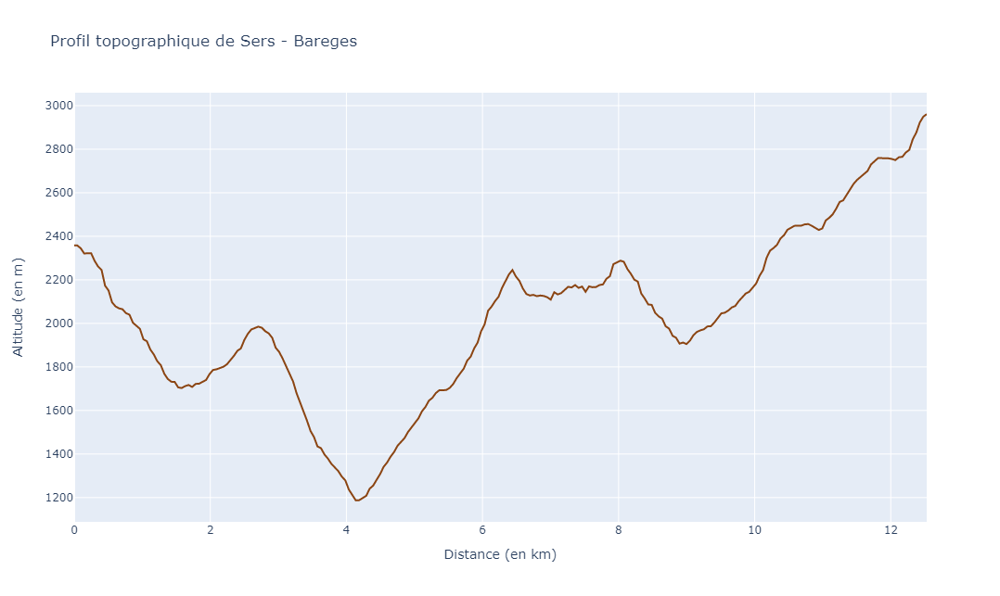
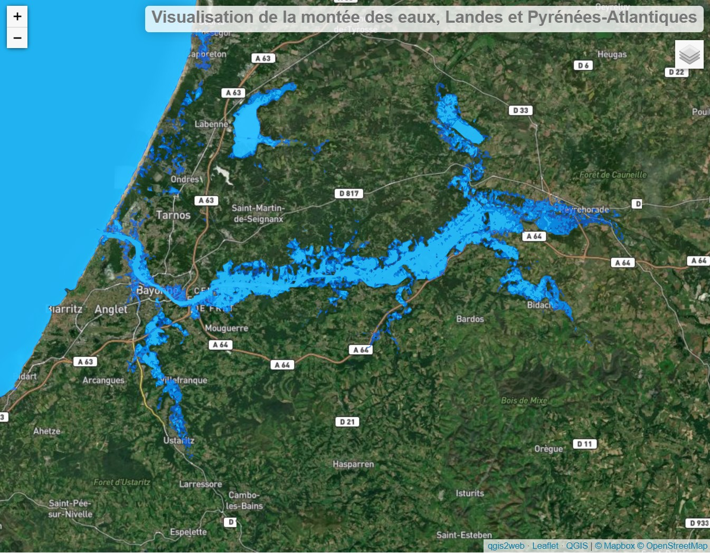
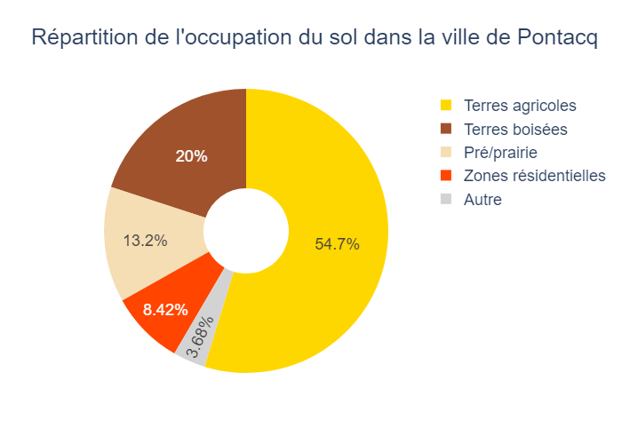
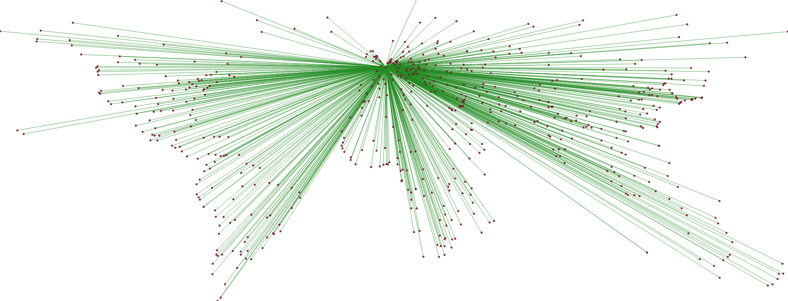

Florian Cosse
Portefeuille de projets.
Mes projets

Import d'un MNT pour réaliser des profils topographiques semis-automatisés.

Webmapping avec qgis2web sur la montée des eaux.

Analyses de données météos faites avec Pandas.

Import des données de landuse d'OpenStreetMap pour afficher leur répartition dans un diagramme circulaire

Utilisation de l'environnement QGIS pour écrire des scripts rapides avec PyQGIS.